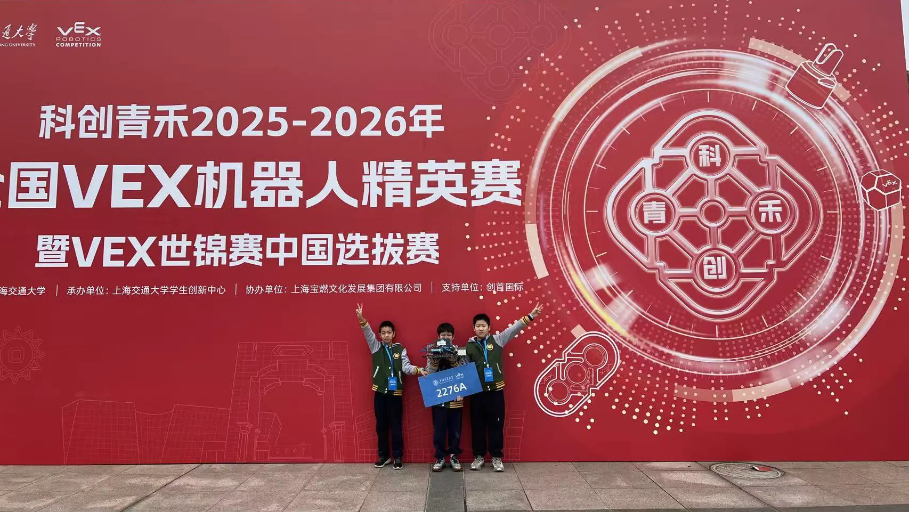

Gen 4: Coding Architecture Upgrade
Chapter 9: The Software Engineering Leap
As our understanding of VEX IQ grew, we realized mechanical iterations alone weren't enough. To achieve stable and efficient automation, we launched a full upgrade of our coding architecture.
This chapter details how we applied software engineering principles to refactor our modular code, leading to a leap in robot performance.
Core Task: Build a clear, scalable, and high-fault-tolerant programming framework for complex autonomous and strategic execution.
9.1 System Initialization
A reliable system starts with a precise initialization. We defined three core steps to ensure the robot starts in peak condition.
1. Device Initialization (Init)
Sets all motor torques to 100% and brake modes to "Hold" to resist external forces. Also initializes all pneumatic systems.

9.1 System Initialization (Cont'd)
2. Lift Reset
Uses "Stall Detection" to precisely zero the lift arm encoder. The motor drives down until its speed drops below 30%, signaling it has reached the physical bottom.

3. Pin Reset (Flip Reset)
Similar to the lift, the flip mechanism drives down until speed is <10%, zeroes the encoder, then lifts 10° for operation clearance.

9.2 Telemetry & Driving
Precise control and fast debugging are keys to victory. We designed a real-time telemetry interface and a drive system with safety locks.
1. Screen Telemetry
Displays critical variables like "Beam" state, Lift angle, and Flip angle directly on the Brain's screen for fast on-field diagnosis.

9.2 Telemetry & Driving (Cont'd)
2. Drive Control
Introduced a "Safety Lock" mechanism: the robot only responds to sticks when the chassis variable (dipan) is active. We also added a 20% Deadzone to avoid stick-drift errors. This ensures the robot won't move accidentally if the driver bumps a stick during a precise automated sequence.

9.3 Button Logic Mapping (1)
Every button on the controller has a clear, intuitive function, with complex logic encapsulated behind the scenes.
D, R3, L-Up

- D: Move to 121 Base (Pin=8)
- R3: Drop to 121 Base (Pin=9)
- L-Up: Increment Beam State (1->2->3)
9.3 Button Logic Mapping (2)
E-Up, R-Down

- E-Up: Open Hook (Beam=0)
- R-Down: Toggle Tower Height (Pin 0/1)
9.3 Button Logic Mapping (3)
F-Buttons

- F-Down: Toggle Triangle Height (Pin 2/3)
- F-Up: Manual Grab Adjust (Jia +/- 1)
9.3 Button Logic Mapping (4)
E-Down

- Loading Logic:
- Pin=4: Approach
- Pin=5: Grip & Lift
- Pin=7: Reset
9.4 Automated Lift Sequences (1)
Automation is our scoring multiplier. We break complex flows into states controlled by precise code.
1. Start & Grip Sequence

When Beam=0, the system stays in a 40° ready state. When Beam=1, the robot auto-completes the "Reverse -> Drop -> Grip -> Lift" sequence and hands control back to the driver.

9.4 Automated Lift Sequences (2)
2. Lift Heights
A simple State Machine manages target heights. Beam=2 targets the 91-height; Beam=3 targets the 121-height, ensuring reliable positioning for different scoring tasks.

9.4 Automated Lift Sequences (3)
3. Release Sequence
Pressing L-Down executes different steps based on state. At 91-height, it drops to 265°, opens the claw, rises to 350°, and resets—all in one button press.


9.5 Gen 4 Competitions: WRC Finals
Tournament: 2025 World Robot Contest Finals (WRCF)
Date: Jan 8 - Jan 11, 2026 Venue: Wuxi Xishan High School
Awards: Design Award, Second Prize
Highlights & Analysis
1. Design Award: A Victory for Software Architecture
The judges highly praised our Gen 4 programming framework. The modular logic, rigorous initialization, and robust telemetry helped us stand out from many strong teams, securing the Design Award and qualifying us for the VEX Worlds.
2. Consistent Performance: Skills & Teamwork
- Skills: With high stability in autonomous programs, we scored 341 points, ranking 7th overall.
- Teamwork: Completed 7 matches with a high score of 367. The Gen 4 code showed extreme robustness in variable environments.
9.5 Gen 4 Competitions: Shanghai Elite
Tournament: National VEX Robotics Elite Competition
Date: Feb 1 - 4, 2026 Venue: Shanghai Jiao Tong University
Awards: Second Prize
Summary & Outlook
1. Validating State Machine Logic
During this Elite competition, our "One-Button Scoring" state machine performed near-perfectly. Our drivers reported significantly lower stress, allowing them to focus entirely on on-field strategy.

2. Road to VEX Worlds: St. Louis 2026
The successful conclusion of the Elite competition is just a stepping stone.
From April 28-30, we will represent China in St. Louis, Missouri, taking our battle-tested Gen 4 architecture to the highest level of global competition. The journey continues!